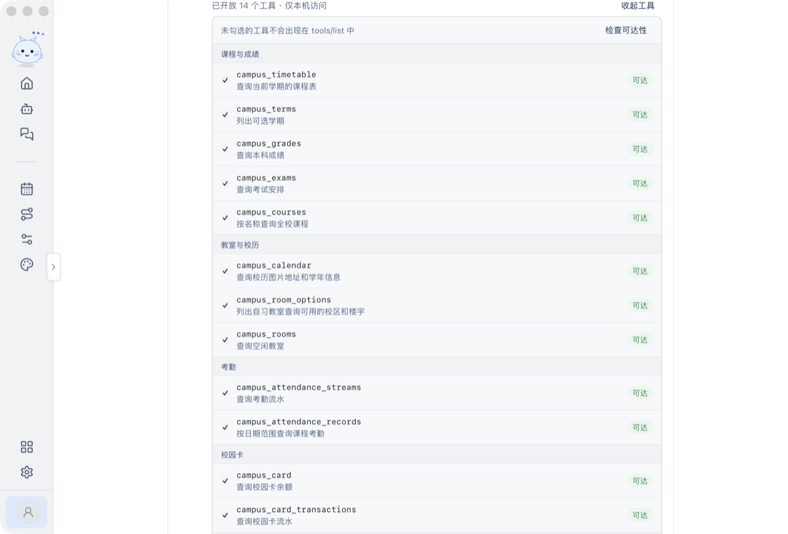

一处登录
密码、短信验证码、扫码三种方式；多账号保存，WebVPN 自动回退，凭据只存在本机。
课表、成绩、思源学堂、Agent 与工作台。Rust 直接对接校园系统，凭据只保存在你的电脑上。



功能
不是把网页塞进客户端。查询走原生请求，写操作先预览、再确认。
密码、短信验证码、扫码三种方式；多账号保存，WebVPN 自动回退，凭据只存在本机。
今日课程与完整学期课表，按周切换；成绩、考试、考勤、校园卡、空闲教室一页查完。
作业、学习资料、课程回放、讨论按类型切换；附件可另存，录播课直接取回放地址。
用自然语言查询校园数据；改课表、交作业、评教都会先给出预览，你同意后才执行。
打开 MCP 模式后，Claude Code 等编程 Agent 可以在本机直接调用同一批校园工具。
课表、畅行校园、主页主题以插件形式出现；应用更新带签名校验，可更换镜像源。
安装
应用没有 Apple 与 Windows 代码签名证书，系统提示不代表安装包损坏；可以用官网公布的 SHA256 核对后再打开。